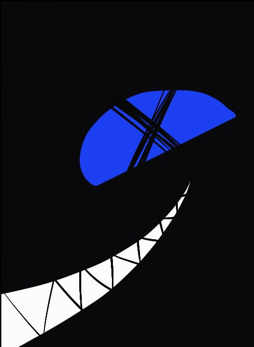

⚠ SECONDARY PERSONALITY DATA ACCESS
PROJECT-29
SECONDARY : ASTAROTH
🜏 UNKNOWN ENTITY RECORD

PERSONAL DATA
FULL NAME : ASTAROTH
DEPARTMENT : UNKNOWN
HEIGHT : 0 ~ 4m
SPECIES : DEVIL
AGE : 536
IQ : UNKNOWN
FAMILY RELATIONS : NOTHING
📌 UNKNOWN NOTE
ASTAROTH MEMO
과거와 미래 모든 비밀을 알고 있습니다.
드래곤일까?
##일까?
당신이 보고있는 모든 어둠은
나로 이루어져 있을지어니.
🧬 PERSONALITY RECORD
RELATION
NOX의 다른 자아.
NOX와 소통은 가능하나, 정보 전달은 제한적으로 이루어짐.
대상은 독립적인 의식을 가진 것으로 추정되나 정확한 발생 원인은 확인 불가.
🌑 DARKNESS RESPONSE
ABILITY CONDITION
강한 어둠일수록 힘이 증가하는 현상이 확인됨.
저조도 환경에서 ASTAROTH 반응률 상승.
※ NOX 단독으로 어두운 장소에 방치하지 말 것.
📂 OBSERVATION LOG
[PROJECT-29 RECORD]
SECONDARY RESPONSE DETECTED.
SUBJECT NAME : ASTAROTH
COMMUNICATION : POSSIBLE
INFORMATION RELEASE : RESTRICTED
⚠ NOTANDUM
████████████
강한 어둠일수록 더욱 강해질 것입니다.
DO NOT PROVIDE DARK ENVIRONMENT.
DO NOT ATTEMPT DIRECT CONTACT.
████████████
FINAL SECURITY NOTE
SUBJECT : PROJECT-29 SECONDARY
IDENTITY : ASTAROTH
THREAT LEVEL : UNKNOWN
CONTAINMENT : OBSERVATION ONLY
RECOMMENDATION : DO NOT SEPARATE FROM NOX